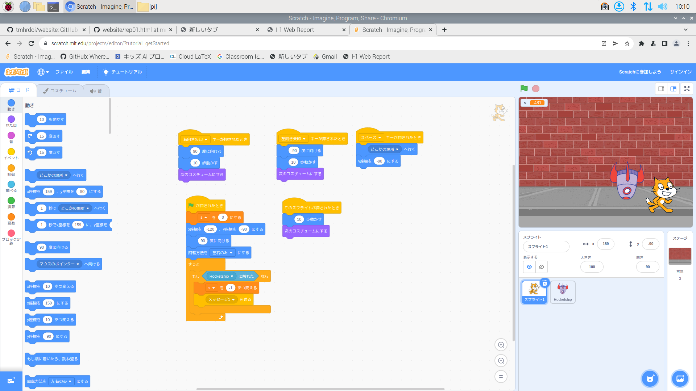
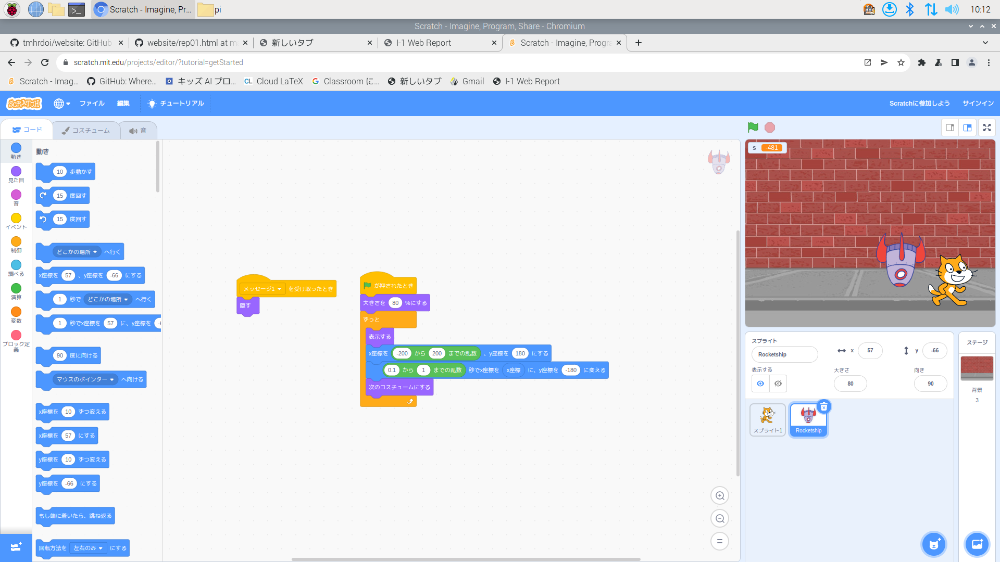

公大高専１年実習I-1レポート
3組11番 398
第1週目
1-1 サイエンスアート
1.内容
スクラッチを使って、猫を90度回転しながら線を描くプログラムを作成した。
また、線が少しずつ色を変えるようにしたり、回転スピードを変えたり、x座標をある程度進み、進んだ数戻り違った円をかけるようにした。 。
2.感想
スクラッチの猫を思たように動かせて楽しかた。
ただ動かすだけでなく、猫が線を描いたりできるところもすごいと思った。
1-2 ゲーム
 
1.内容
学んだことを活用して、二つのプログラムを作成して、ロケットが落ちてくるのを避けるゲームを作成した。
当たるとポイントがー1されるよう作成した。
2.感想
二つのプログラムを作るのが楽しかった。
変数を使ってポイントが加算されたり、乱数を使ってロケットの落ちるスピードを調整したり、できないことはないなと感じた。
1-3 ホームページ作成
私のホームページ
1.内容
GitHubを使って自分のホームページを作成して、「3a－１１」と打ち込んでみた。
2.感想
ホームページ作成を作成するのは難しいかなと思っていたけど、< br> GitHubを使って作成から打ち込みまでわかりやすくて楽しかった。